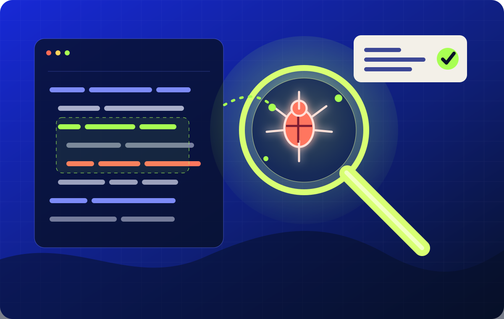

观察缺口
读取昨日漏测分支、变异测试幸存者与失败标本。
Project design / RSI starter
Bug Hunter 是一个递归自我改进（RSI）入门项目：每天改进测试策略，同时探测当前部署服务的真实 API。实际请求、复测证据、Bug 修复事件和策略记录都保存在 D1；合成基准单独标注。
每天不是重复运行，而是改变下一次如何寻找缺陷。上一代的算子收益会改变下一代的搜索预算；只有训练分严格提升、保留集不退步且回归 100% 通过，候选才能晋级。

01 / Evolution loop
Cron 每天只负责唤醒系统。真正的进化来自“发现薄弱点—产生不同候选策略—用基准集竞争—只晋级更优版本—反过来改写明天的搜索方法”。
读取昨日漏测分支、变异测试幸存者与失败标本。
选择最值得攻克的缺陷族，而不是随机扩大测试量。
生成 5 个候选测试基因：输入、序列、断言与超时策略。
在隔离样本中比较新缺陷、覆盖率、误报与执行成本。
候选必须提高综合分，且不能破坏既有回归测试。
保存胜负原因，并改写网页中的现状、瓶颈与下一目标。
递归发生在第二层：系统不仅改测试策略，还根据过去七代的成功率，重新分配“边界扩张、状态序列、并发扰动、输入缩减”四类变异算子的权重。它在学习如何更有效地改进自己。
02 / Evidence board
五个候选策略在固定上限的合成基准中比较；图表展示策略权重、保留集得分与回归门槛。覆盖数据明确标为模拟指标，不冒充真实仓库代码覆盖率。
合成基准说明：当前策略在封闭的购物结算缺陷模型上比较，得分是搜索效率代理指标，不是对真实仓库的测试结果。RSI 只更新测试策略与项目设计数据，不修改或部署自身代码。
上一代的发现收益会反馈到下一代预算分配。
显示最近一代候选得分、保留集和淘汰理由。
柱高表示回归检查通过率；策略进步看训练 / 保留集得分和晋级决策。
统计合成基准与教学样例的分类。此处不等同于真实仓库代码覆盖率。
03 / Real API loop
对当前部署的 Bug Hunter API 发起只读契约探测。保存请求、预期和实际响应；重复失败合并为同一 Bug，下一轮根据发现调整探测方向。
这里的“真实”指当前部署服务的 API 代码路径和实际 D1 状态。它尚未连接你的业务 API；合成基准的数量和分数仍在上方单独展示。
03 / Specimen archive
每个缺陷都会被保存为可复用标本：触发条件、最小复现输入、失败签名、修复建议与防复发测试。标本不是日志，而是下一代的训练材料。
正在读取标本记录…
04 / Evolution ledger
每一代都保存候选、策略权重、合成得分、保留集结果、回归门槛和决策原因。失败候选也保留，网页从 D1 读取真实状态。
| 运行时间 | 触发方式 | 检查数 | 新标本 | 回归通过 | 记录摘要 |
|---|---|---|---|---|---|
| 正在读取运行历史… | |||||
晋级要求训练得分严格提高、保留集不退步且 100% 回归通过；否则保持现策略并公开拒绝原因。
由 Cron / 手动触发的实验记录组成。
05 / Cloud architecture
第一版坚持“小而可证”：一个 Worker、一个 D1 数据库、一套 Workers Static Assets。代码本身保持稳定，每日变化保存在可审计的测试基因与设计文档状态中。
Living specification
06 / Delivery map
先在可控样本仓库里证明进化闭环，再接入真实项目。入门版不允许系统自动合并修复，只生成证据与建议。
Worker API、D1 标本库、运行历史与每日 Cron 已接入。
五候选竞赛、四类搜索算子、稳定测试库、建议规则版本与严格晋级门槛已运行。
将合成基准替换为只读目标仓库测试，并用真实覆盖与回归结果校准策略。
把候选生成的修复建议交给人验证；第一版不会修改生产代码或自动合并。